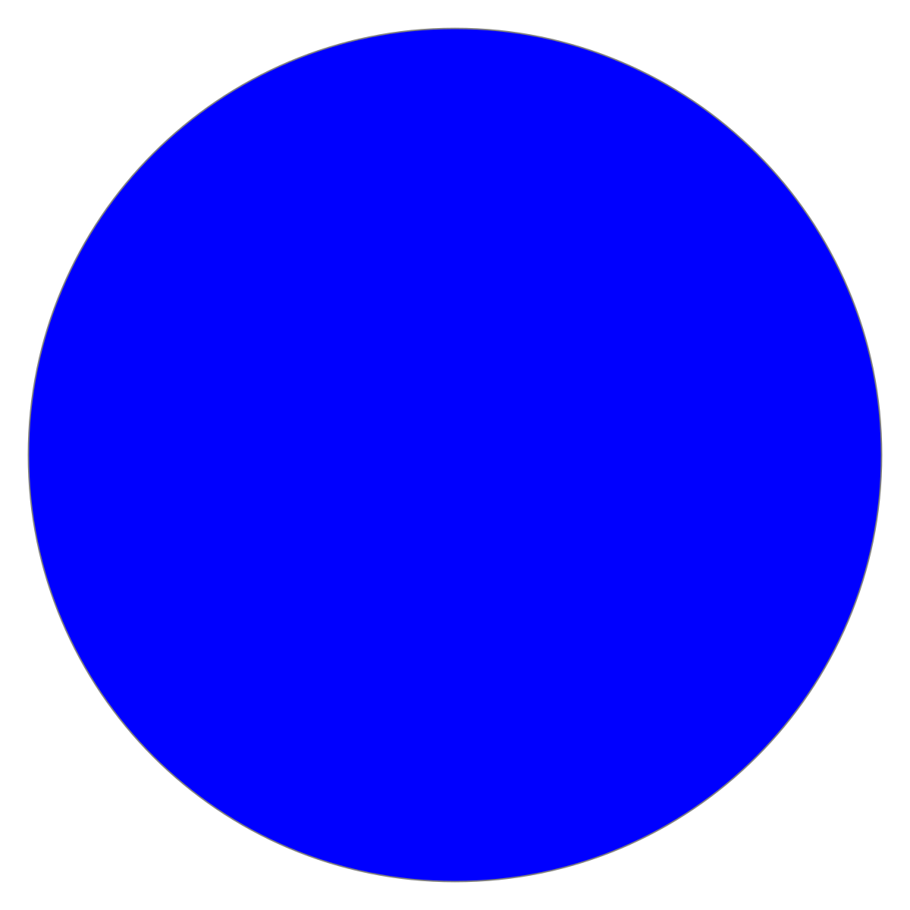

Cours 3
Reprenons le calcul du PPCM : et si on voulait additionner deux PPCMs ?
Le problème. Le même calcul est écrit deux fois, car il faut les deux résultats à la fois. On aimerait l’écrire une seule fois et l’appeler à volonté : c’est le rôle d’une fonction.
En général, l’exploitation des données en Python passe par les fonctions :
def fonction(x):
[...] # exploiter les données
return y
input_data = [...] # stocker les données
fonction(input_data)Une fonction implémente une procédure qui peut être appelée plusieurs fois sur différentes données (input_data). Le input_data sera une collection d’objets, chacun ayant un certain type.
On déclare une fonction par l’instruction def, suivie du nom de la fonction, puis des paramètres, et finalement de deux points.
Le corps de la fonction doit suivre : c’est un bloc de code indenté.
Le corps peut contenir une ou plusieurs instructions return. Ces instructions terminent l’exécution de la fonction et retournent un objet.
Remarque. Une fonction peut prendre zéro paramètre.
Une fois qu’une fonction a été définie, nous pouvons l’appeler. L’appel doit toujours avoir lieu après la définition.
Pour appeler une fonction : le nom de la fonction suivi, entre parenthèses, d’un argument pour chaque paramètre.
Dès qu’un return est exécuté, le programme quitte la fonction et l’appel devient l’objet retourné. Sans return, la fonction retourne l’objet None.
Si l’instruction return x, y est exécutée, la fonction retourne les deux objets x et y, qui peuvent être affectés à deux variables, et de même pour n’importe quel nombre d’objets.
Remarque. Une fonction qui retourne plusieurs objets séparés par des virgules retourne en réalité un tuple.
Les fonctions interrompent le flux normal du programme :
None si rien n’a été renvoyé).
Les fonctions interrompent le flux normal du programme :
None si rien n’a été renvoyé).
Ceci nous amène à une distinction (que je trouve utile).
Devant n’importe quel appel de fonction, on peut se poser deux questions :
Les deux réponses sont indépendantes : print fait beaucoup mais ne retourne rien.
Il est possible de spécifier une valeur par défaut pour certains paramètres, qui sont donc optionnels.
Les paramètres optionnels doivent être spécifiés après les paramètres obligatoires dans la définition de la fonction.
Lors de l’appel, si aucun argument n’est fourni pour un paramètre optionnel, la valeur par défaut est utilisée.
print permet au programme d’afficher des informations à l’écran.
On lui donne un ou plusieurs objets, séparés par des virgules,
elle affiche le str associé à chacun d’eux, séparés par un espace.
print peut accepter plusieurs types : int, float, str, bool, NoneType, tuple…
Explication : print applique (en interne) str sur tout objet qu’on lui donne. Donc si un objet peut être casté en str, print peut l’afficher !
elle retourne l’objet None.
Remarque. Nous utilisons print depuis le Cours 1 sans jamais dire ce qu’elle est. C’est une fonction, et elle illustre que les fonctions ne se limitent pas à ce qu’elles retournent : elles peuvent se contenter de faire quelque chose.
La fonction print admet deux paramètres optionnels : sep et end.
sep est inséré entre les arguments passés à print : par défaut, un espace ' '.
end est ajouté après le dernier argument : par défaut, un retour à la ligne '\n'. C’est donc end qui fait que chaque print commence une nouvelle ligne.
Remarque. Écrire sep = '-' dans l’appel, c’est lier un argument à un paramètre par son nom. Voir cette page sur les arguments nommés.
Attention. L’utilisation plus avancée de print (caractères d’échappement, f-strings, formatage des nombres) est décrite sur cette page.
Nous venons de voir que print accepte autant d’objets qu’on veut. On peut écrire nos propres fonctions ainsi, en mettant l’opérateur * devant le dernier paramètre.
Python pack alors tous les arguments restants dans un tuple, que la fonction manipule comme n’importe quel autre : len, indexage, boucle for…
*args, tous les paramètres qui suivent doivent être des arguments nommés.Important. Cette règle évite l’ambiguïté : sinon Python ne peut pas savoir si un argument fait partie du tuple *args ou s’il correspond à un paramètre suivant. Voir à nouveau la page sur les arguments nommés pour une explication détaillée et un exemple.
Lorsqu’une variable est créée dans un programme Python, les portions du programme qui peuvent y accéder sont la portée de cette variable.
La portée d’une variable dépend de l’endroit du code où elle est définie.
Une variable définie dans une fonction est dite locale (à cette fonction).
Une variable définie à l’extérieur de toute fonction est dite globale.
Les règles pour déterminer la portée d’une variable sont les suivantes.
Règle I. Une variable locale à une fonction n’est pas accessible hors de cette fonction.
Règle II. Une variable globale est accessible à l’intérieur d’une fonction.
Attention. Si on essaye de réaffecter une variable globale dans une fonction, Python va créer une variable locale qui a le même nom.
On peut imaginer que chaque fonction garde un registre des variables qui sont définies dans la portée de cette fonction.
x, l’interpréteur Python va d’abord vérifier si cette variable est présente dans le registre local de cette fonction.x dans ce registre.Remarque. On peut afficher ces registres local et global avec les fonctions locals et globals.
Si, dans une fonction, on veut pouvoir réaffecter une variable définie globalement, il faut la déclarer comme globale dans la fonction, avant de l’affecter.
Ceci indiquera à l’interpréteur Python de ne pas enregistrer cette variable dans le registre local à la fonction, mais de toujours consulter le registre global pour accéder à l’objet référencé par cette variable.
Les fonctions doivent être définies à un endroit accessible par Python. Elles peuvent être :
print, max, abs) ;mes_fonctions.py) ;random.randint, math.sqrt) ;Il existe différentes manières d’importer une fonction d’un module :
| Méthode d’import | Appel |
|---|---|
from module_name import fonction |
fonction() |
from module_name import * |
fonction() |
import module_name |
module_name.fonction() |
import module_name as alias |
alias.fonction() |
Remarque. La deuxième méthode est la moins recommandée, car elle risque d’effacer des fonctions locales.
Voici quelques modules classiques :
| Module | Description |
|---|---|
math |
Fonctions mathématiques (sin, sqrt, pi) |
random |
Génération de nombres aléatoires |
time |
Fonctions liées au temps |
os |
Interaction avec le système d’exploitation |
sys |
Interaction avec l’interpréteur Python |
Remarque. Liste complète : docs.python.org/3/py-modindex.html
Écrivons un programme qui génère deux points aléatoires sur la grille de coordonnées entières, puis calcule la distance entre ces deux points.

random nous donne les coordonnées, math nous donne la racine carrée ;
distance isole le calcul, et le reste du programme s’occupe de l’affichage.
Écrivons un programme qui…
1 à n, une autre parcourt les caractères de chaque adjectif.if ne laisse passer que les consonnes.Remarque. Le mot-clé in peut également être utilisé pour créer des conditions booléennes.